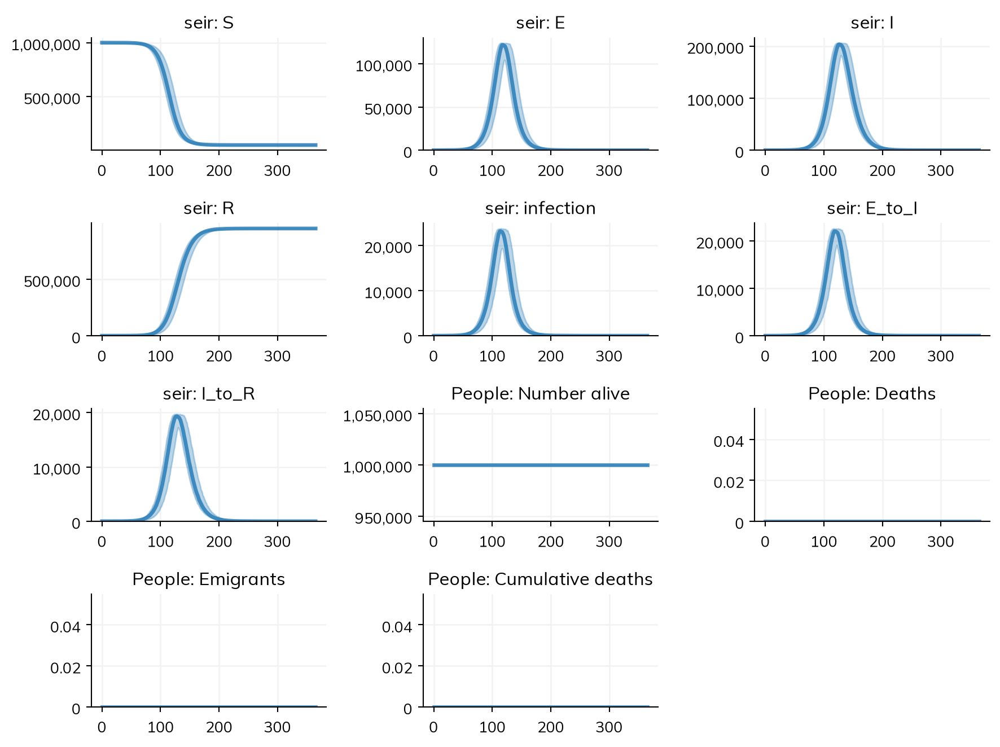

This page is for people who write their own models as a loop in NumPy: a compartment per variable, a binomial draw per flow each step (a chain binomial), 1 - np.exp(-rate*dt) to turn a rate into a probability, an array axis for each age group or place, and a loop of runs over seeds. It shows such a model next to the same model in Starsim, how their results agree, how long each takes, and what works and what does not yet.
The same model in both
A stochastic SEIR in daily steps, for a million people, written as a NumPy loop:
import numpy as npdef run_numpy(seed=0, N=1_000_000, I0=10, beta=0.3, sigma=0.2, gamma=0.1, days=365): rng = np.random.default_rng(seed) S, E, I, R = N - I0, 0, I0, 0 out = np.zeros((days+1, 4)) out[0] = S, E, I, Rfor t inrange(days): n_SE = rng.binomial(S, 1- np.exp(-beta*I/N)) n_EI = rng.binomial(E, 1- np.exp(-sigma)) n_IR = rng.binomial(I, 1- np.exp(-gamma)) S, E, I, R = S - n_SE, E + n_SE - n_EI, I + n_EI - n_IR, R + n_IR out[t+1] = S, E, I, Rreturn outruns = np.array([run_numpy(seed) for seed inrange(200)])print('NumPy, 200 runs: mean peak of I', round(runs[:,:,2].max(axis=1).mean()), 'and mean final R', round(runs[:,-1,3].mean()))
NumPy, 200 runs: mean peak of I 205567 and mean final R 949913
In Starsim, each flow is one line, with its rate; the conversion of rates to probabilities, the bookkeeping of who leaves and enters each state, and the results are done for you. solver='binomial' runs it as a chain binomial, and substeps=1 takes each day whole, as the loop above does (by default, the chain binomial splits a step when more than about 5% of a compartment would leave in it, or fewer near the epidemic threshold):
import starsim as ssS, E, I, R = ss.states(4)seir = ss.Disease(S >> E @ ss.perday(0.3)*I, E >> I @ ss.perday(0.2), I >> R @ ss.perday(0.1), init_n=dict(I=10))sim = ss.Sim(seir, total_pop=1_000_000, unit='day', stop=365, solver='binomial', substeps=1, verbose=0)msim = sim.run(n_runs=200)msim.plot()

msim.summarize() summarizes each result over each run (a state by its final value, unless told otherwise; here I by its peak), then over the runs, with the median, a 95% interval, the mean, and the standard deviation:
summary = msim.summarize(how={'seir_I': 'max'}) # The peak of I in each runsummary.loc[['seir_I', 'seir_R']]
median
low
high
mean
std
result
seir_I
205556.5
204404.325
206382.85
205516.605
512.415387
seir_R
949915.0
949332.325
950468.55
949944.270
313.049704
The same model runs as an ODE with sim.run(solver='ode'), and as agents with sim.new(solver='abm', n_agents=100_000).run() (sim.new() makes a new sim from the same inputs, with whatever is given changed), with no change to the model.
How the results agree
Model
Agreement
The SEIR above, as a chain binomial
Agree: over 200 runs each, the mean peak of I is 205,517 in Starsim against 205,568 in NumPy (0.02%), and the mean final R is 949,944 against 949,914 (within one standard error of the difference, about 30); the mean of I peaks on day 128 in both
The same model as an ODE (solver='ode')
As expected: a peak of 196,388 on day 120 and a final R of 940,480, the deterministic counterpart of the chain binomial (which has a higher peak since its steps are a day long)
The same model as 100,000 agents (solver='abm'), each standing for 10 people
Agree when the epidemic takes off: peaks of 195,780 and 194,990 and final sizes of 942,370 and 938,490 in two seeds, close to the ODE’s. The 10 initial infections are one agent, so in two of four seeds the epidemic dies out at once, as it should for one case with R0 = 3
These numbers are from runs on 22 October 2026, on a 20-core x86-64 Linux machine shared with other work.
Timings
Lines are lines of model code (not counting blank lines, comments, imports, printing, or plotting, and counting a line over 100 characters twice); times are for one run, on the same machine as above.
Model
Lines: NumPy
Lines: Starsim
One run: NumPy
One run: Starsim
The SEIR above, a year in daily steps
13
4
0.7 ms
13 ms to build and run (70 ms the first time in a new process); 100 runs in 0.11 s
Pass: the north star fails a time only if Starsim is more than 2 times slower and more than 1 s slower
A NumPy loop of a few compartments is hard to beat for speed, since it does nothing but the draws. Starsim’s time goes into building the sim (checking the model, choosing the solver, making the results); the run itself is compiled code, so the difference shrinks as the model grows in states, groups, and steps, and many runs are run on all cores by sim.run(n_runs=).
What works and what does not yet
There is no switching demo for NumPy users, since a NumPy model is whatever its author wrote. These are the tasks a NumPy loop is usually written for, and where each stands today.
Task
Today
A chain binomial, an ODE, or agents from one model
Works: solver='binomial', 'ode', 'gillespie', or 'abm', above
An array axis for age or place, with a contact matrix or mixing between places
Works: sim.run(n_runs=) runs them in parallel; msim.summarize() gives the median, an interval, and the mean of each result over the runs, and res.quantiles() the range at each time point
Fitting to data
Works: sim.fit() chooses the method from the model (by gradients for an ODE, by simulation for a stochastic model), and gives a posterior when one is asked for (method='nuts', 'pmcmc', or 'abc-smc')
Anything the loop does that is not a flow between states (a running maximum, a rule in Python)
Works: a module written as code, with a step() in Python; a value it keeps can be read by a function in a rate, which runs under any solver
Speed for a small model run once
Slower: 13 ms against 0.7 ms (above), which is under the north star’s limit but 18 times slower
Bringing your model in
There is no importer for NumPy code, since a loop can do anything. An AI assistant with Starsim’s import-model skill (starsim_ai/import-model/ in the Starsim repository, or starsim ai show import-model) can translate one, following the mapping above: each binomial draw is a flow (S >> E @ rate), its probability’s rate is the flow’s rate, and each array axis is a stratification.
See Import/export for importing in general: checking an import, keeping it as code, and finishing one that is incomplete.